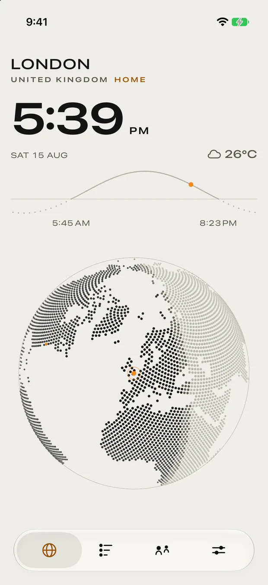

Travel
Meridian
A precision world clock, on a globe that is actually alive.
iPhone · iPad · Mac · Vision Pro · Apple TV · Watch

The app
A precision world clock, on a globe that is actually alive.
A worldtimer built around a live dot globe with a real day and night terminator, projected and rotating rather than drawn once, with weather as ambient context instead of the main event.
Time zones, city search and the solar maths are all computed on the device. Only the weather touches the network, and without it the app degrades to a fully working world clock. Aeroplane mode is a supported configuration, not a failure state.
Features
What it actually does.
A live projected dot globe
Time zones and solar maths offline
Six Apple platforms
Widgets on every one of them
Privacy
Every time and every sunrise is computed on your device; your cities and people live in your own private iCloud, and none of it is ever sent to me.
StorageOn device
On-device (SwiftData), synced through your private iCloud database — readable by no one else, including me
AnalyticsNone
No analytics of any kind.
Third partiesNetwork
Apple Weather (WeatherKit) — receives the coordinates of your saved cities, taken from the app's bundled atlas rather than your device's location, to fetch current conditions; Open-Meteo — receives the same city coordinates as a fallback when Apple Weather has no answer; no account, no key, no identifier; RevenueCat — validates App Store purchases; receives the store receipt and a random anonymous app id, never your name, email or contents; Tally — only if you choose to open a feedback form, the link carries the app version, OS version, device model and locale so reports are actionable; nothing is sent unless you submit the form